Описание
Позиционируется в основном как саппорт, помогающий основному активному персонажу эффектами, не дающие ему погибнуть или восстанавливающие здоровье. Может быть активным саппортом, воскрешая погибших союзников или снижая шкалу блокбастера противника, оглушать его или снимать его баффы.
Прекрасно справляется и сама в роли атакующего персонажа. Огромным уроном приёмов не обладает, но урон от комбо вполне огромен, также даёт эффекты кровотечения. Но с позицией танкующего персонажа справляется очень плохо: в основном это варианты танка с регенерацией, однако огромным запасом здоровья не хвастается, а регенерацию можно остановить разными способами.
Биография
Валентайн - единственная выжившая из "Последней надежды" - группы сотрудников специальной лаборатории по борьбе с Девой Черепа. До поражения от рук Девы Черепа, группировка работала в таинственной лаборатории "Зеро" и выполняла различные задания - от разведки и диверсий до передовых исследований.
Теперь, Валентайн покорно служит этой Деве, выполняя ее волю из тени. Она держится сама по себе, поэтому многое о ее истинной природе и личности неизвестно.
Особые навыки
- Поглощение - 75% наносимого урона восстанавливает предварительное здоровье (красная шкала).
- Неотложка - Активный союзник получает неупал на 15 секунд при потере более 10% здоровья от одного удара.
- Бит - Получает мощную регенерацию на 15 секунд при получении отрицательного эффекта.
- Престиж: заряжает по 4% при восстановлении 1% здоровья. При активации: воскрешает союзников и постоянно лечит ~1% своего здоровья в секунду.
Достойные к прокачке вариации
Новичкам:
- Горячий лёд дд, саппорт
- Смерть джой саппорт
Пост-новичкам:
- В морге универсал
- Генерал-хирург дд, саппорт
- Последний клык дд
Опытным:
- Сайлент килл дд
- Пламенная воительница дд, саппорт
- Мокрое дело дд
- Инкогнито дд
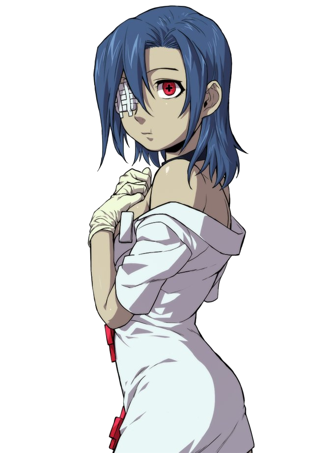
Описание приёмов
- Приём
- Урон
- Эффект
- Описание
- 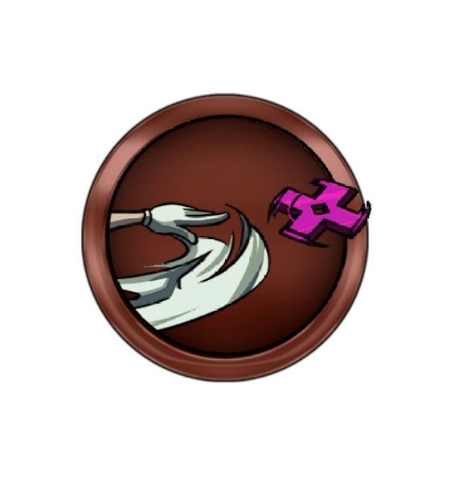
- Очень низкий
- Шанс нанести кровотечения
- Комбинируется, но с окнами. Используют редко
- 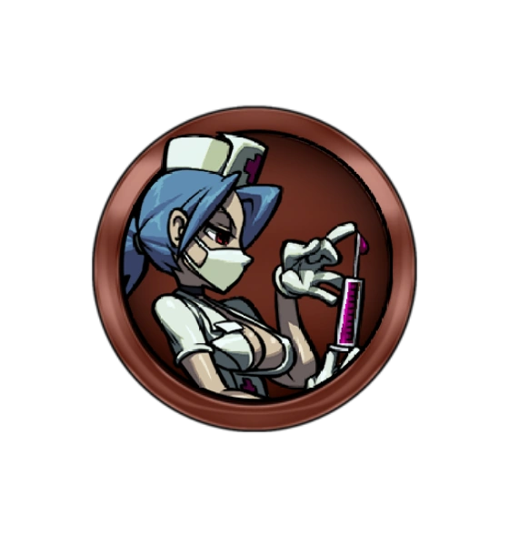
- Очень низкий
- Снижает шкалу бб, включая блок
- Красный шприц, требует зарядку, комбинируется
- Очень низкий
- Шанс снять все баффы, включая блок
- Зелёный шприц, требует зарядку, комбинируется
- 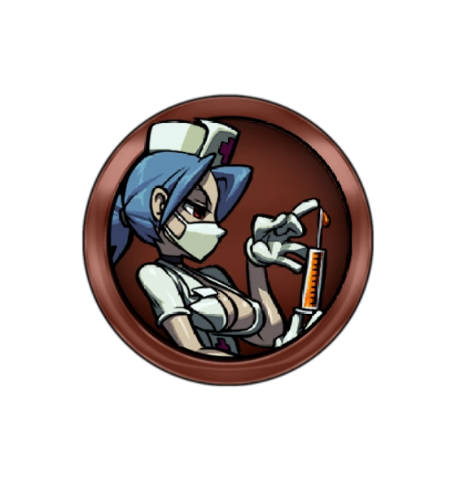
- Очень низкий
- Шанс оглушить при ударе, включая блок
- Жёлтый шприц, требует зарядку, комбинируется
- 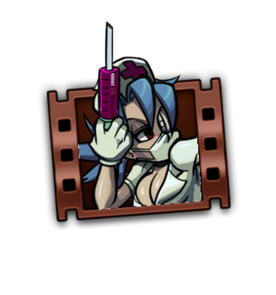
- Средний
- Снижает шкалу бб при ударе
- Красный шприц, комбинируется
- 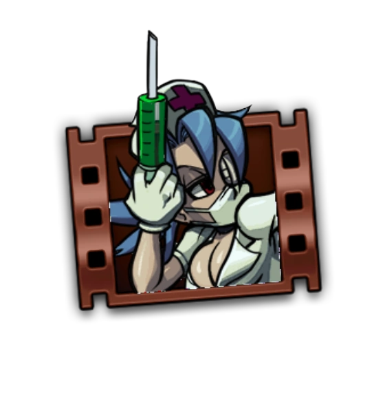
- Средний
- Шанс снять все баффы при ударе
- Зелёный шприц, комбинируется
- 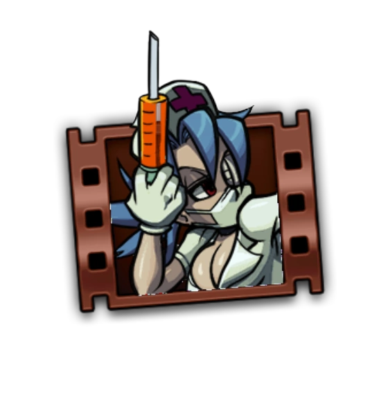
- Средний
- Шанс оглушить при ударе
- Жёлтый шприц, комбинируется
- 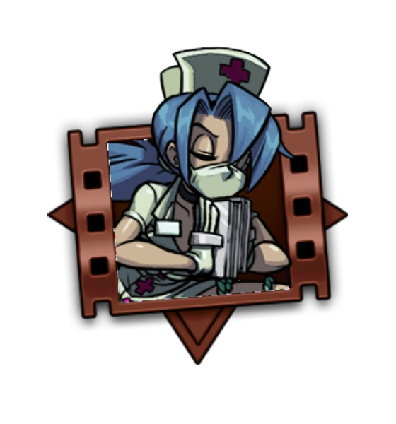
- Высокий
- Воскрешает союзника с небольшим запасом НР
- Можно использовать во время комбо; можно ударить по врагу и трупу союзника одновременно
- 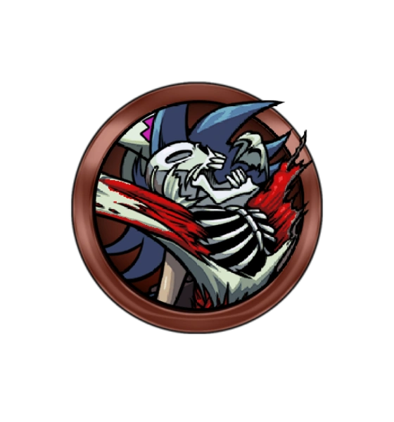
- Нет
- Накладывает кровотечение
- Прерывает атаку противника, но не работает когда персонаж в воздухе
- 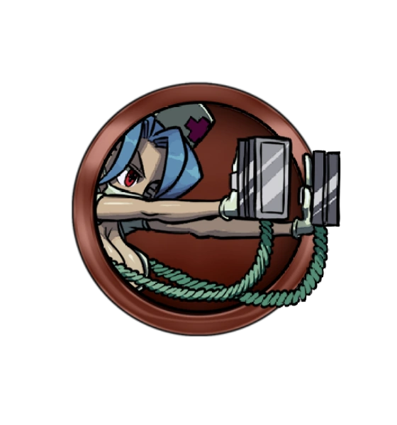
- Нет
- Сменяет противника
- Если противник один, просто отталкивает его
- 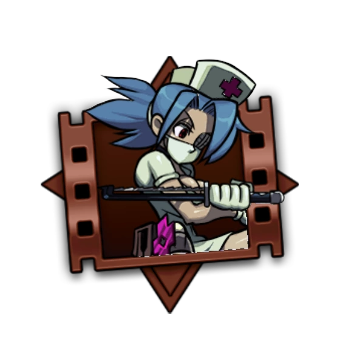
- Высокий
- Шанс наложить сильное кровотечение
- Можно использовать в комбо
- 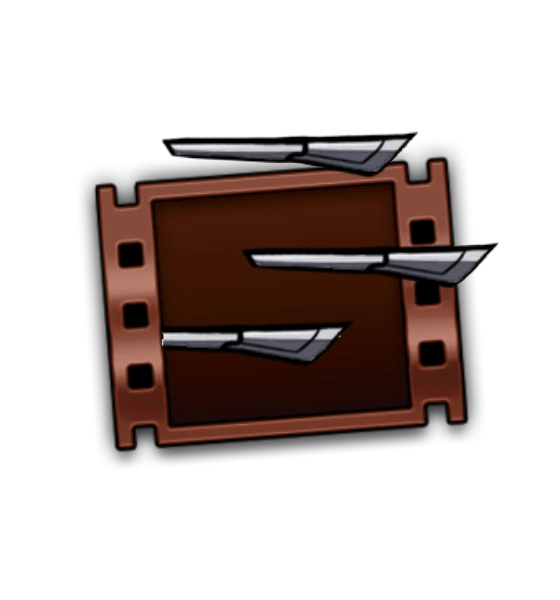
- Низкий
- Шанс наложить кровотечение
- Можно использовать в комбо как добивающий
- 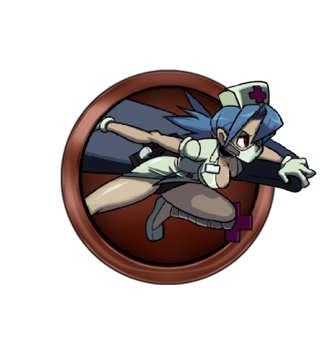
- Очень низкий
- Шанс оглушить, если на вас регенерация
- Неблокируемый, неотменяемый захват
- 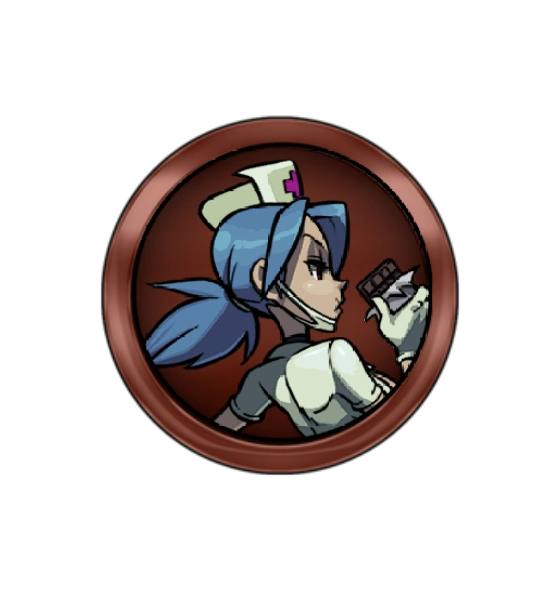
- Нет
- Получить регенерацию
- Бесполезный приём
- 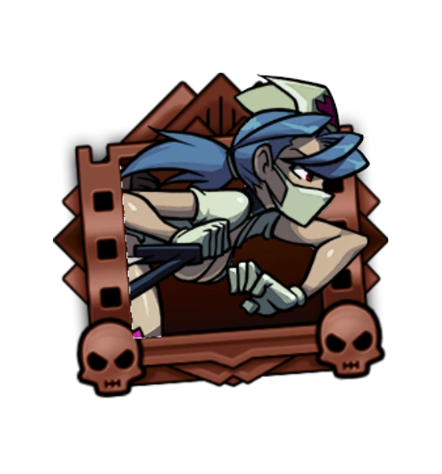
- Средний
- Доп урон, если у противника кровотечение
- Не очень эффективный приём
- Высокий
- Даёт мощную регенерацию при убийстве
- Комбинируется в некоторых случаях
Рекомендуемый универсальный билд
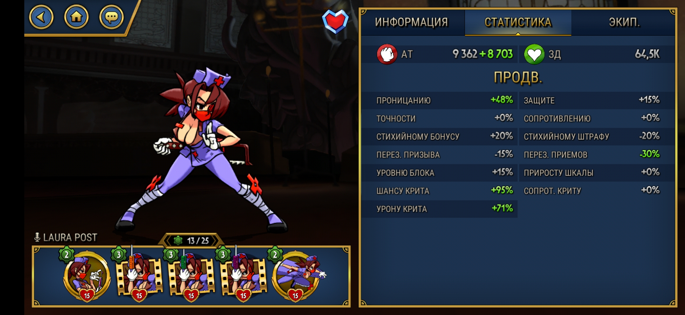
Мешок для захвата, 3 бб шприца для комбо, 1 шприц для снятия шкалы бб противника. Важные статы для прокачки: атака и проницание для урона, перезарядка приёмов или шкала блокбастеров для быстрого восстановления приёмов, шанс крита и урон крита для доп урона.
Возможный билд для саппорта
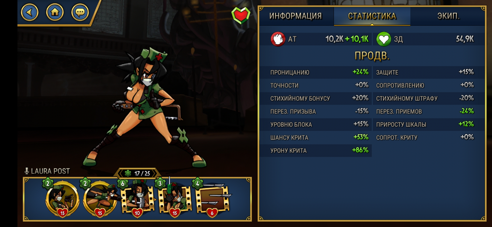
Процедура для воскрешения, мешок и шприц для оглушения, шприц для снятия баффов врага, ножи для защиты спереди и кровотоков. Статы: перезарядка приёмов или шкала блокбастеров для ускорения восстановления приёмов, точность для контры сопротивлению для наложения дебаффов, атака и криты по желанию.